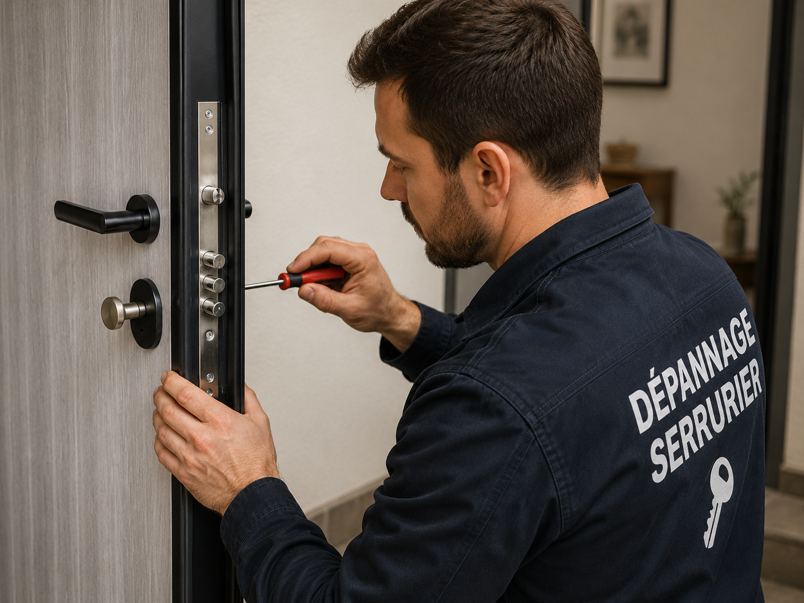
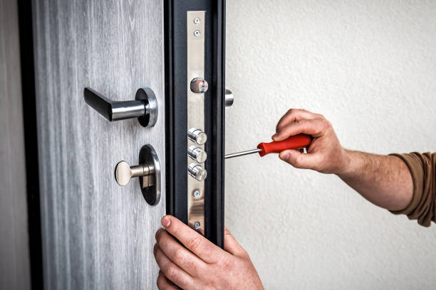

Contrôle avant remplacement Saint-Germain
Dans Paris 6e, la serrure est testée avant de proposer une pièce neuve: cylindre, coffre, pêne, gâche et alignement.
Remplacement seulement si nécessaire : devis avant pose
Changement de serrure Paris 6e: serrure 3 points, multipoints, porte blindée, mécanisme usé ou tentative d’effraction vers Saint-Germain. Devis avant remplacement. Le diagnostic vérifie d’abord si le cylindre suffit ou si le coffre de serrure doit vraiment être remplacé.

Dans Paris 6e, la serrure est testée avant de proposer une pièce neuve: cylindre, coffre, pêne, gâche et alignement.
À Saint-Germain, le modèle est choisi selon le sens d’ouverture, la porte existante et les points de fermeture déjà présents.
Après un choc vers Odéon, la sécurisation distingue la fermeture provisoire, la réparation utile et le remplacement complet si le coffre est touché.
Dans le 75006, le type de serrure, la main-d’œuvre et les réglages de porte sont expliqués avant l’intervention.
Dans Paris 6e, un changement de serrure ne doit pas être décidé trop vite. Une clé qui force peut venir du cylindre, mais aussi d’un pêne sous pression, d’une gâche décalée ou d’un mécanisme multipoints fatigué.
Autour de Saint-Germain, le contexte compte: résidences anciennes, cabinets et portes sécurisées. Le serrurier commence donc par identifier ce qui est réellement en panne avant de proposer un remplacement de serrure complet.

À Saint-Germain, la différence compte: le cylindre reçoit la clé, tandis que la serrure commande le pêne et parfois les points de fermeture. Le devis précise donc la pièce réellement concernée.
Dans le 75006, le remplacement complet est recommandé quand le coffre est usé, quand la serrure a subi un choc, quand les points ne sortent plus correctement ou quand la porte n’est plus sécurisée.
Le remplacement devient pertinent quand la serrure ne garantit plus une fermeture stable. À Saint-Germain, cela peut arriver après une tentative d’effraction, une usure ancienne, un mauvais alignement répété ou une serrure multipoints qui ne répond plus.
Le but n’est pas de poser la serrure la plus chère, mais le modèle compatible avec la porte et le niveau de sécurité attendu dans le 75006.
Quand le problème vient d’une serrure multipoints désynchronisée à Saint-Germain, un point peut accrocher en haut ou en bas et empêcher la fermeture complète. Dans ce cas, le diagnostic porte ouverte puis fermée est indispensable avant de choisir une serrure neuve.
Le devis dans Paris 6e indique si la pose demande une adaptation de gâche, un réglage de porte ou simplement un remplacement au même format.
Un cas de serrure après tentative d’effraction dans le 75006 demande plus de méthode qu’un simple changement de cylindre. Le serrurier contrôle les fixations, la tringlerie et le passage des points de fermeture.
Cette vérification dans Paris 6e évite de poser une serrure neuve sur une porte encore sous contrainte, ce qui ferait revenir la panne rapidement.
À Saint-Germain, les demandes ne se ressemblent pas: urgence après effraction, serrure ancienne, porte blindée, mécanisme bloqué ou besoin de sécurisation durable.
Vers Odéon, le serrurier vérifie si le mécanisme peut être réparé ou si le changement complet est plus fiable. La décision dépend de l’état du coffre, de la gâche et des points.
Avant la pose à Saint-Germain, le client sait quelle pièce est prévue, pourquoi elle est utile et si la porte demande un réglage complémentaire.
Après perte de clés, le cylindre suffit souvent. Mais si la serrure est ancienne ou déjà abîmée vers Notre-Dame-des-Champs, le remplacement complet peut être plus cohérent.
Le diagnostic à Saint-Germain évite de confondre un besoin de sécurité avec une panne mécanique.
Dans le 75006, les points haut, bas et latéraux doivent sortir sans frottement; sinon la serrure neuve peut forcer dès les premiers jours.
Le prix est annoncé à Saint-Germain avant intervention, avec le modèle, la pose et les réglages éventuels.
Un remplacement propre dans Paris 6e commence par un diagnostic, pas par un démontage immédiat. La serrure doit correspondre à la porte et à l’usage réel.
À Saint-Germain, la serrure 3 points est mesurée et comparée à l’existant; coffre, tringles et gâches doivent rester compatibles.
Dans le 75006, la course des points est contrôlée avant et après pose, car un mauvais alignement peut bloquer la fermeture.
Une porte blindée à Saint-Germain demande un modèle adapté au protecteur, au cylindre et au système de fermeture.
Après effraction à Notre-Dame-des-Champs, la sécurisation peut être provisoire si la porte est trop marquée, puis définitive avec la bonne serrure.
Le montant est annoncé dans Paris 6e avant démontage complet, avec les adaptations éventuelles expliquées.
Après le remplacement à Saint-Germain, la serrure est testée plusieurs fois porte ouverte puis fermée. Ce contrôle vérifie que la clé tourne sans forcer et que les points rentrent correctement dans les gâches.
Dans Paris 6e, le serrurier vérifie aussi la poignée, le jeu de porte, le cylindre et la fermeture côté palier. Une serrure neuve doit être fluide dès la fin de l’intervention.
À Saint-Germain, le remplacement devient utile si le mécanisme force, si la serrure a été abîmée, si les points ne sortent plus correctement ou si la sécurité n’est plus fiable.
Dans le 75006, le cylindre suffit si le coffre de serrure reste sain. La serrure complète est remplacée si le mécanisme, la tringlerie ou les points de fermeture sont touchés.
Oui. Dans Paris 6e, le serrurier vérifie les dimensions, le sens d’ouverture, la tringlerie, la gâche et la compatibilité avec la porte avant de proposer le modèle adapté.
Après une tentative vers Odéon, il faut contrôler le cylindre, le coffre, la gâche et le bâti. Le devis distingue sécurisation immédiate et remplacement durable.
Le prix dépend du type de serrure, du niveau de sécurité, de la porte et de la difficulté de pose. Le montant est annoncé avant intervention dans Paris 6e.
Oui, mais le remplacement demande une méthode précise. À Saint-Germain, le serrurier contrôle le protecteur, les points de fermeture et le modèle compatible avant la pose.
Pour compléter le dépannage autour de Saint-Germain, retrouvez les pages serrure bloquée, cylindre, porte fermée, urgence et arrondissements voisins.
Appelez en indiquant Paris 6e, le quartier, le type de serrure, les symptômes et si la porte a subi une tentative d’effraction. Le devis est annoncé avant remplacement.